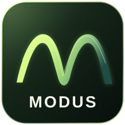

Dagens musikkverktøy og artikler kan brukes gratis.
02
Hør det du lærer.
Planlagt medlemsinnhold kobler forklaring, lyd og praktiske øvelser.
03
Velg din rytme.
Måned eller år. Pris og fornyelse skal være tydelige før du kjøper.
DITT MEDLEMSKAP
Enkel betaling. Oversikt på ett sted.
Vi klargjør betaling gjennom Stripe og en kundeportal for kvitteringer, betalingskort og oppsigelse. MODUS Dvale skal automatisk stanse neste fornyelse etter 30 dager uten aktivitet, slik at du ikke betaler videre for noe du ikke bruker.
Ingen betalingsopplysninger registreres på denne siden nå.

FORELØPIG APPKONSEPT
MODUS PÅ MOBIL OG NETTBRETT
MODUS, også som app. En ny måte å utforske musikken på.
Vi planlegger å utvikle en egen MODUS-app for mobiltelefoner og nettbrett, slik at læring, musikkteori og interaktive verktøy blir enda enklere å ta med seg.
Under utvikling · Mer informasjon kommer i 2027.
Appen er på planleggingsstadiet. Funksjoner, tilgjengelighet og eventuell lanseringstid er foreløpig ikke fastsatt.
FØR DU VELGER
Litt mer å vite.
Kan jeg kjøpe medlemskap nå?+
Ikke ennå. Priser og innhold vises som et forslag. Betaling åpnes først når innhold, medlemstilgang og betalingsmottak er klare.
Hva skjer med det som er gratis i dag?+
Dagens backingtracks, akkordverksted, teorirom, artikler og doriske læringssti er fortsatt åpne. Betalte medlemskap er planlagt som et tillegg med nytt innhold.
Hvem kan få studentrabatt på MODUS+?+
MODUS Elev er planlagt for aktive elever og studenter som kan dokumentere skole- eller studietilhørighet. Nøyaktige kvalifikasjonsregler, inkludert alder og hvilke skoleslag som omfattes, fastsettes før åpning. MODUS gir ikke studiepoeng eller akkreditert utdanning.
Hvordan bekrefter jeg at jeg er elev eller student?+
Vi vurderer en sikker løsning gjennom en verifiseringsleverandør eller Feide der lærestedet støtter det. En valgt skole eller en skole-e-postadresse alene er ikke tilstrekkelig. Bekreftelse og eventuell fornyelse av studentstatus kommer først når ordningen åpner.
Hvordan fungerer årsbetaling?+
Du betaler hele årsbeløpet samlet: 390 kr for Elev, 790 kr for Modus+ eller 1 290 kr for Studio. Det tilsvarer ti månedsbetalinger – du sparer henholdsvis 78 kr, 158 kr eller 258 kr sammenlignet med tolv månedsbetalinger.
Hva skjer hvis jeg ikke bruker MODUS på 30 dager?+
Vi planlegger MODUS Dvale: Etter 30 dager uten aktiv bruk i innlogget økt stanses automatisk fornyelse, slik at du ikke belastes for neste periode. Du beholder tilgang ut perioden du allerede har betalt for. Dette skal gjelde både måneds- og årsabonnement. Ordningen er under utvikling og ikke aktiv ennå.
Kan jeg vekke medlemskapet igjen?+
Ja. Hvis den betalte perioden fortsatt pågår, får du tilbake tilgangen uten en ny belastning. Etter at perioden har utløpt, kan du velge å starte en ny periode med et nytt, uttrykkelig godkjent kjøp. Bare det å logge inn skal aldri utløse et nytt trekk. Automatisk fornyelse slås ikke på igjen uten at du godkjenner det.
Kan jeg si opp abonnementet?+
Ja, når som helst. Oppsigelsen skal straks stoppe videre automatisk fornyelse. Du beholder tilgangen til slutten av perioden du allerede har betalt for. Eventuelle rettigheter etter angrerettreglene påvirkes ikke. Kundeportal og endelige vilkår klargjøres før salg åpnes.
Er øvingsnotatene mine knyttet til en konto?+
Foreløpig lagres notater, øvingsfremdrift og akkordrekker bare i samme nettleser. Medlemskonto og synkronisering mellom enheter er ikke aktivert.